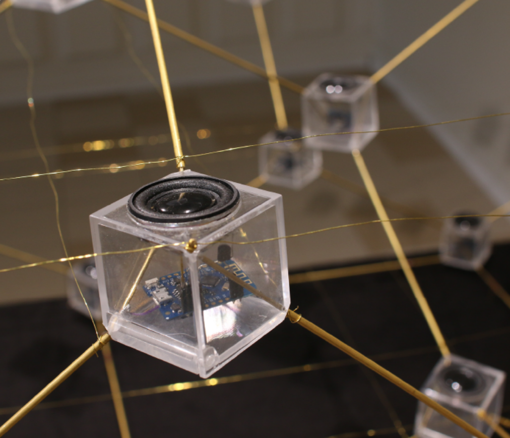

<div class='container'>
    <div id="works">
        <div class="row">
            <div class="col-9">
                <div class="content-container">
                    <h2>SINCHRONISATION CHAOTIQUE</h2>
                    <p>avec <a href="https://vincentmartial.com" target="blank">Vincent Martial</a> et <a href="https://webusers.imj-prg.fr/~pierre.berger/" target="blank">Pierre Berger</a> - <a href="http://esthetopies.ihp.fr/" target="blank">Groupe de recherches Esthétopies</a></p>
                    <p>Laiton, méthacrylate, microcontroleurs, enceintes</p>
                    <p>2019</p>
                    <br>
                    <br>
                    
                    <br>
                    <br>
                    <br>
                    <p>Synchronisation chaotique est une œuvre sonore et visuelle qui propose d'explorer de façon sensible des espaces mathématiques imaginaires, où notre perception naturelle est modifiée, où les sons se propagent et circulent éternellement. Nous proposons de voir et d'entendre cette recherche à la fois scientifique et sensible.</p>
                    <br>
                    <br> 
                    <p>Une équation dite « aux dérivées partielles » (EDP) est un système continu évoluant dans le temps, dans lequel l'état de chaque point dépend de son état et de celui de ses voisins immédiats dans l'instant présent. Synchronisation chaotique est une oeuvre évolutive qui se prête à l'exploration et la compréhension, de systèmes régis par des EDP simulant des phénomènes de la nature. Le dispositif permet de ressentir de façon sonore et visuelle des phénomènes tels que la propagation des ondes dans un espace, la relation entre la géométrie de l'espace et une telle dynamique.</p>
                    <br>
                    <br>                                 
                    <p>Synchronisation chaotique se présente sous la forme d'une oeuvre sculpturale dans laquelle des noeuds, représentés par de petits modules en mouvements sont répartis dans l'espace sur une surface géométrique dont chaque point est relié de manière tétraédrique. Le dispositif permet une forme particulaire d'écriture sonore à partir du mouvement sonore. Ce sont les propagations engendrées au sein de la structure qui développent un espace acoustique singulier.</p>                        
            </div>
        </div>
    </div>
</div>